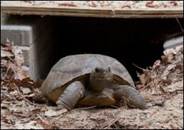
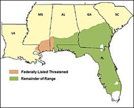

Gopher Tortoises in Athens
Gopher Tortoises live in the southern part of Georgia in its Longleaf Pine Savannas, so you're not likely to see them in the wilds of Athens, GA. However they are a native species of southern Georgia. There are a number of conservation efforts set to help these tortoises thrive. You can learn more than the casual observer by clicking the buttons below...
Taxonomy
| Order |
Testudines |
| Family |
Testudinidae |
| Genus |
Gopherus |
| Species |
polyphemus |
Diet
- In the wild, gopher tortoises eat a variety of vegetation. Mostly wiregrass, but also other grasses, forbs (an herb that is not like a grass), and small herbaceous plants. Cacti are also favored.
- At Bear Hollow, the tortoises eat a mix of prepared tortoise pellets, leafy greens and occasionally some fruit.
Range and Habitat

- Gopher tortoises live in South Carolina, Georgia, Florida, Alabama and into Mississippi.
- In Georgia, the tortoises are found in the southern half of the state, in the coastal plain. They seem to be absent from the Okefenokee Swamp.
- Gophers are a resident in the sandhills, particularly of the longleaf pine-wiregrass ecosystem.
- They need open areas with sandy soil and lots of grasses and other vegetation to forage.
Physical Features
- Usually some shade of grayish brown. Very tough scales covering legs, soft dry skin on neck and inner legs.
- Wide round head. Stump-like back feet; front legs are flat, and shovel-like. Very short, stubby tail. Domed shell is usually between nine and eleven inches long.
- Males tend to be a little larger than females and have a concave plastron.
Life Span
- Adults, particularly females, may not reach reproductive maturity until they are nearly 20 years old. In the wild, they can live from forty - sixty years; in captivity, for seventy years.
Reproduction
- Mating occurs in April through June. Males court females by chasing them around feeding territories.
- Nesting is in June, with the peak being towards the middle of the month.
- An average of six round eggs are laid in the apron of the burrow and will incubate for about 100 days.
- The babies hatch out and are on their own from then on.
Social Behavior
- Gopher tortoises are fairly social animals. They live in colonies and are often found out foraging for food near each other.
- They may create ‘highways’ or well-traveled, easily seen footpaths to favored feeding grounds or between individual burrows.
- Adult males will sometimes skirmish with each other and get into pushing matches, particularly as they get into breeding season.
Conservation
- Gophers used to be rather common turtles. It is estimated that over the last century, their population numbers have been decreased by eighty percent.
- They are now listed as a Threatened species, at both the state of Georgia and federal levels and are completely protected.
- When fire is suppressed in gopher tortoise habitat, small trees, shrubs, and brambles begin to grow making it difficult for the gopher tortoise to move around and eventually shade out the low growing plants that gopher tortoises eat.
- Along with the suppression of natural forest fires and loss of habitat, gophers are being hit hard by another problem: upper respiratory tract disease.
- They graze on vegetation just like cows, and therefore, are important players in spreading seeds.
Interpretive Information
- The sex of baby gophers is determined by temperatures while the eggs are incubating. If the temperature is at 84 degrees, or a little lower, the babies are male. If the temperature is at 86 or a little higher, the babies come out female. Right around 85 degrees produces a mix of males and females.
- The entrance to the burrow is called the apron. It is made by the gophers flinging sand out as they burrow, and it creates a rounded, wide-open, sandy area just in front of the actual burrow hole.
- Burrows can be up to forty feet in length and six to ten feet underground. They are known to house over 350 species of other animals (from foxes to camel crickets!). Because of this, gophers are known as a keystone species of the longleaf pine community.
- Unfortunately, many tortoises in the past were killed by food or by rattlesnake hunters. The introduction of gasoline into the burrows of gopher tortoises (“gassing”) is a technique used by some rattlesnake hunters to force the snakes to the surface. This practice is typically fatal to all burrow inhabitants.
- GA’s State Reptile
- Gopher tortoises are ancient: their ancestors are a species of land tortoise that originated in western North America some 60 million years ago. They are the only tortoise that occurs east of the Mississippi River, in habitats that some refer to as the “southeastern desert.”
Bear Hollow’s Gopher Tortoises
- Female: Faith
- Wild hatched, unknown time. She was found wandering at Faith Evangelized Methodist Church on Barnett Shoals. She was probably collected from south Georgia to be a pet and arrived at Bear Hollow in September 1997.
- Male: Shrek
- He was born at the Parks at Cheehaw in captivity from a captive collection. They are approximately 7 years old now.
- Male: Fiona
- Originally thought to be female, we now know he is male. He was born at the Parks at Cheehaw in captivity from a captive collection. They are approximately 7 years old now.
Credits and References
- Photo © Wade Sheldon
- General research by Sherrie Hines
- http://georgiawildlife.com/sites/default/files/uploads/wildlife/nongame/pdf/accounts/reptiles/gopherus_polyphemus.pdf
- http://myfwc.com/wildlifehabitats/profiles/reptiles-and-amphibians/reptiles/gopher-tortoise/
- Range Map: http://www.gophertortoisecouncil.org/